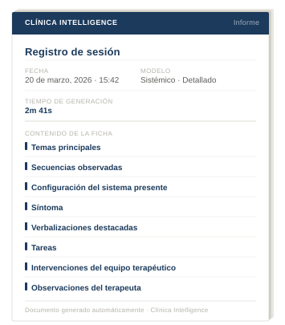
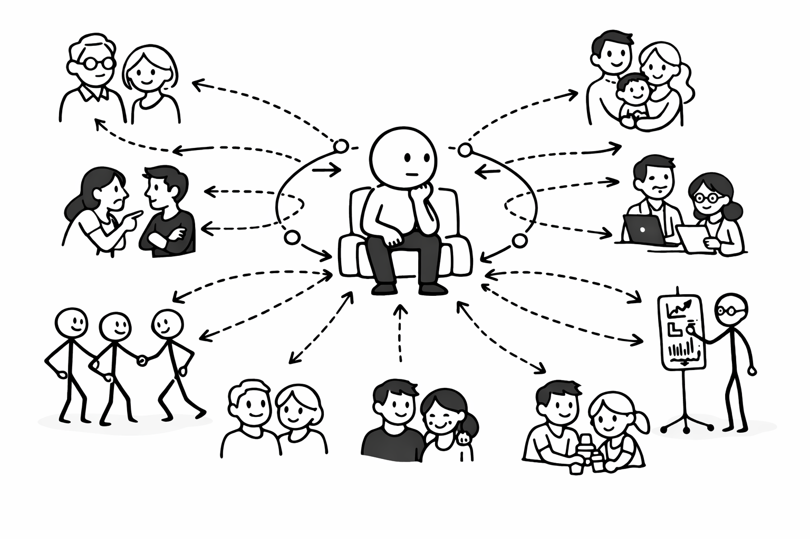
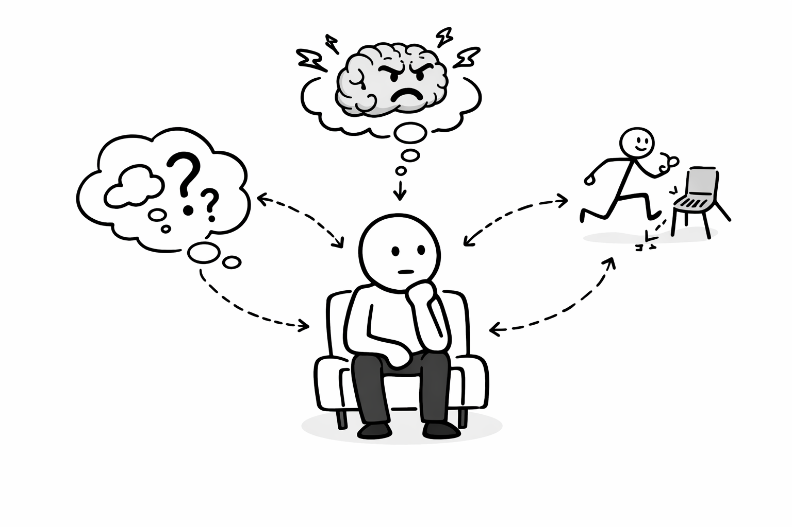

Cada sesión procesada desde el modelo terapéutico, con lenguaje clínico entrenado en español chileno. No interpreta. No propone. Describe con precisión lo que ocurrió — desde adentro. Una organización que documenta bien, opera mejor.

56%
La IA mejoró la adherencia al plan de tratamiento y redujo un 56% el tiempo de documentación clínica.
Psychology, Scientific Research Publishing, 2025
99,7%
De las sesiones reales no incluyó registro de intervenciones ni síntesis de sesión — recomendados en casi todos los protocolos basados en evidencia.
JMIR Formative Research, 2022
37%
Terapeuta agotado, paciente que no mejora. El burnout reduce un 37% la probabilidad de mejoría clínica.
JAMA Network Open, 2024
Para terapeutas sistémicos que documentan procesos relacionales complejos. El modelo describe lo que ocurrió en la sesión desde la lógica relacional del trabajo sistémico — interacciones, secuencias y movimientos del sistema. Reconoce herramientas del terapeuta y clasifica intervenciones como reencuadre o clarificación del síntoma. Sintetiza los temas principales de cada sesión para que la continuidad del proceso no dependa de la memoria del terapeuta.


Logramos transmitir la experiencia vivida del paciente en sesión, descrita desde el modelo y forma de operar del terapeuta.
La interpretación y conducción clínica es siempre del terapeuta
No es una herramienta genérica adaptada a salud mental. Fue diseñada desde adentro.
La documentación manual durante y después de cada sesión acumula una carga invisible. Notas incompletas, registros atrasados y detalles que se pierden entre un paciente y otro. Con el tiempo, el peso administrativo compite directamente con la energía clínica del profesional — y la calidad del registro baja justo cuando más se necesita.
Al capturar la sesión completa y procesarla desde el modelo terapéutico del profesional, CI convierte cada conversación en un registro clínico estructurado. El terapeuta recibe documentación clara, consistente y alineada con su forma de trabajar — sin escribir una sola nota.
CI fue construido en colaboración directa con psicólogos clínicos con más de 30 años de experiencia. No es una herramienta genérica adaptada a salud mental — fue diseñada desde adentro, entendiendo cómo piensa y opera un terapeuta. Un compañero fiel que habla el mismo lenguaje clínico.
Diseñado desde el inicio para cumplir con los estándares clínicos y legales de Chile.
Datos encriptados con el mismo estándar usado por bancos y gobiernos.
Tu grabación se elimina automáticamente tras el procesamiento.
Proveedores auditados en seguridad y confidencialidad.
Diseñado para cumplir la protección de datos personales en Chile.
Cada profesional solo accede a sus propios datos.
Nada se procesa sin autorización del paciente.
Cada organización tiene necesidades distintas.
Por eso, CI adapta sus servicios y costos según tus operaciones y flujo de trabajo.
Envíanos un mensaje y habla con un operador para conocer cómo nuestra plataforma puede integrarse a tu equipo y optimizar tu documentación clínica.